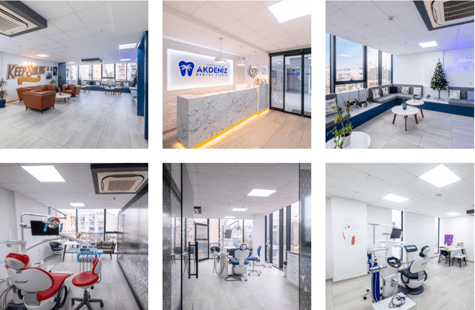

- Luni – sâmbătă, 9:00 – 19:00

Dinții lipsă vă afectează încrederea? La clinica noastră din Antalya, Turcia, oferim metoda de implant dentar All-on-4, o soluție revoluționară care vă poate transforma viața. Acest tratament de înaltă calitate este nu numai eficient, ci și accesibil. Permiteți-ne să vă arătăm de ce Antalya este cea mai bună destinație pentru implanturi dentare All-on-4 și de ce călătoria în străinătate pentru tratamentul dentar este o decizie inteligentă.
De ce sunt necesare implanturile dentare All-on-4?
Pentru pacienții care și-au pierdut majoritatea sau toți dinții, tehnica implantului dentar All-on-4 marchează o revoluție. Această intervenție chirurgicală creativă susține un întreg arc de dinți artificiali cu doar patru implanturi de titan. Poziționăm strategic aceste implanturi pentru a îmbunătăți stabilitatea și pentru a minimiza necesitatea de proceduri suplimentare, cum ar fi grefarea osoasă. Deci, rezultatul este un set de dinți practici, cu aspect natural, care se simt exact ca ai tăi. (Faceți clic pentru informații detaliate)
Cine este eligibil pentru implanturile All-on-4?
Cei care și-au pierdut toți dinții maxilarului
Cei care sunt nemulțumiți de proteza lor
Cei care au probleme de mestecat și vorbire din cauza pierderii dinților
Cei ale căror gingii și structură osoasă sunt potrivite pentru plasarea implantului
Beneficiile Implanturilor dentare All-on-4
Înainte și După Implanturi dentare All-on-4 în Turcia
Convenabil : comparativ cu prețurile din Turcia, intervențiile stomatologice din SUA și Marea Britanie sunt scumpe. Cu toate acestea, aplicarea implanturilor All-on-4 în Turcia vă poate economisi până la 70%, fără a sacrifica calitatea.
Rezultate imdeiate : În timp ce implanturile clasice pot dura luni până la finalizare, cu All-on-4, puteți părăsi clinica cu un zâmbet frumos în aceeași zi.
Rata înaltă de succes : Implanturile All-on-4 au o rată de succes ridicată datorită tehnologiei avansate și stomatologilor calificați. Profesioniștii experți în această metodă nu se confruntă cu eșecuri.
Îmbunătățirea calității cieții: Nu mai trebuie să eviți bucatele tale preferate sau să te confrunți cu protezele dentare glisante. Implanturile All-on-4 vă oferă o soluție permanentă și stabilă, permițându-vă să mâncați, să vorbiți și să zâmbiți cu încredere.
De ce să faceți implanturi All-on-4 în străinătate?
Primirea unui tratament stomatologic în străinătate oferă mari avantaje în ceea ce privește costul și calitatea serviciilor, în special pentru cei care locuiesc în țări precum Marea Britanie. Iată principalele avantaje ale tratamentului în străinătate:
Preț convenabil
Tratamentul stomatologic în Marea Britanie, în special implanturile dentare, poate fi destul de costisitoare. În țări precum Turcia, aceste tratamente sunt oferite la prețuri mai accesibile. Puteți să obțineți aceeași calitate și standarde de servicii, dar plătiți mai puțin.
Calitate şi Tehnologie
Turcia folosește aparate și metode de ultimă generație în domeniul stomatologiei. Clinicile moderne oferă servicii la standarde internaționale și oferă cele mai bune opțiuni de tratament pacienților lor.
Oportunități de vacanță
Procesul de tratament se poate transforma și într-o oportunitate de vacanță. În regiunile turistice ale Turciei, puteți găsi oportunitatea de a vă odihni în timpul procesului de tratament și de a descoperi frumusețea țării. Orașe precum Antalya, Istanbul, Izmir sunt destinații ideale atât pentru tratament, cât și pentru vacanță.

Implanturi dentare All-on-4 în Turcia
Turcia este una dintre cele mai importante țări din lume în materie de stomatologie și în special de tratamente cu implanturi. Iată avantajele de a avea implanturi dentare All-on-4 în Turcia:
Instruire şi Standarde dentare
Stomatologii din Turcia sunt instruiți la nivel internațional, experimentați și specializați în domeniul lor. Facultățile de stomatologie din Turcia oferă educație cu cele mai noi tehnologii și metode.
Prețuri avantajoase
Tratamentele dentare din Turcia sunt prestate la costuri mult mai accesibile, comparativ cu Marea Britanie. Acest lucru vă permite să faceți economii considerabile în timp ce beneficiați de servicii de calitate. În plus, multe clinici oferă pachete de tratament pentru a satisface nevoile dumneavoastră, cum ar fi cazare și transport.
Clinici moderne și accesibile
Turcia este situată la răscrucea Europei și Orientului Mijlociu, ceea ce o face o locație foarte avantajoasă din punct de vedere al accesibilității. Multe aeroporturi internaționale oferă zboruri directe către metropolele din Turcia. În plus, clinicile stomatologice moderne din Turcia dispun de dispozitive de ultimă tehnologie și medii sterile.
Comparația costurilor: Marea Britanie vs. Turcia
Țările aplică prețuri diferite pentru implanturile dentare All-on-4. Marea Britanie vs. Turcia:
În Marea Britanie, costul implanturilor dentare All-on-4 variază între 12.000 și 20.000 de lire sterline pe arcadă. Prețul ridicat este atribuit cheltuielilor generale și costurilor de trai din Marea Britanie.
În Turcia, costul implanturilor dentare All-on-4 variază între 3.500 € și 7.000 € pe arcadă. Costurile de operare mai mici, iar cursul de schimb favorabil reduc prețul. Cu toate acestea, în ciuda prețurilor reduse, multe clinici turcești oferă facilități de top și stomatologi experți.
Alegeți destinația potrivită
Clinica noastră este mândră să fie o destinație de top în turismul stomatologic din Turcia, oferind servicii de clasă mondială la prețuri excelente. Echipat cu tehnologie modernă și personal de specialiști calificați, oferim servicii stomatologice de înaltă calitate la o fracțiune din costul la care v-ați aștepta în altă parte. Locația strategică a Turciei și bogata moștenire culturală fac din aceasta locul perfect pentru a primi un tratament stomatologic de top în timp ce vă bucurați de o vacanță de neuitat. La clinica noastră, vă puteți restabili dantura și puteți admira în același timp frumusețea unică a Turciei.
Avantajele alegerii Turciei
Clinici moderne și echipamente de ultimă generație în Akdeniz Dental
Clinici moderne și echipamente de ultimă generație
Clinicile stomatologice din Turcia sunt dotate cu echipamente de ultimă generație și aparate moderne. În acest fel, procesul de tratament este finalizat mai rapid și mai confortabil.
Medici stomatologi experimentați şi experți
Stomatologii din Turcia sunt specializați și experți în domeniile lor. Mulți stomatologi recunoscuți internațional oferă servicii în Turcia. Acest lucru crește succesul tratamentului și satisfacția pacientului.
Servicii ample
Multe clinici dentare ofera pachete speciale pentru pacientii din strainatate. Aceste pachete includ cazarea, transportul și excursiile turistice, precum și procesul de tratament. Astfel, puteți fi tratat confortabil, fără probleme pe parcursul procesului.
De ce Antalya?
Antalya
De ce este Antalya o destinație potrivită pentru tratamentul dvs. stomatologic? Antalya este un paradis pentru turiști, deoarece nu este doar o destinație de top pentru turismul medical, ci și se află pe uimitoarea coastă mediteraneană a Turciei.
Clinici stomatologice de clasă mondială: Clinica noastră din Antalya este printre cele mai bune din Turcia, echipată cu tehnologie de ultimă generație și cu personal de stomatologi cu înaltă calificare. Respectăm standardele internaționale, asigurându-ne că beneficiați de un tratament de top la unitățile noastre.
Tratament accesibil: La clinica noastră din Antalya, puteți primi implanturi dentare All-on-4 la un preț incredibil de accesibil, variind între 3.500 € și 7.000 € pe arcadă. Aceasta este o diferență semnificativă în comparație cu cei 12.000-20.000 de lire sterline pe care le-ați plăti în Marea Britanie.
Locuri frumoase: Imaginați-vă că vă recuperați după procedurile stomatologice pe o plajă toridă sau explorând locuri istorice antice. Excursiile stomatologice în Antalya oferă amestecul perfect de agrement și aventură, făcând ca tratamentul să se simtă ca o vacanță.
Cultură și istorie bogate: Antalya se mândrește cu o cultură și istorie bogată, cu monumente precum Poarta lui Hadrian, orașul antic Perge și uimitorul oraș vechi Old Town. Optând pentru clinica noastră stomatologică nu doar veți primi îngrijire de înaltă calitate, dar veți avea și oportunitatea de a vă cufunda în cultura turcească, de a savura bucate delicioase și de a vă bucura de priveliști uluitoare. Permiteți-ne să facem din vizita dvs. stomatologică o experiență culturală de neuitat.
Atmosferă amicală: ospitalitatea turcească este renumită în întreaga lume! Veți fi întâmpinat cu o atitudine caldă și atenție deosebită când vei ajunge în Antalya. Clinica noastră se asigură că șederea dumneavoastră este cât mai confortabilă și plăcută posibil, astfel că vă veți simți ca acasă, în timp ce primiți îngrijiri dentare de cea mai bună calitate.
Procedura All-on-4: cum se desfășoară?
Consultare inițială: Călătoria dumneavoastră începe cu o consultare amănunțită. Stomatologul dvs. vă va examina dantura, va efectua scanări digitale și 3D și va discuta despre tratament.
Planificarea tratamentului: În urma deciziei de a continua, pregătim un plan cuprinzător de tratament. Această strategie implică scanări digitale și 3D, pentru a analiza osul maxilar și pentru a planifica dinții artificiali.

Plasarea implantului: în ziua tratamentului, medicul dentist va introduce patru implanturi de titan în osul maxilarului. Pentru a evita disconfortul, veți primi anestezie locală sau sedativ. După atașarea dinților protetici provizorii, părăsiți clinica cu un nou zâmbet.
Perioada de vindecare: După câteva luni, implanturile se vor îmbina cu osul maxilar, creând o bază stabilă pentru dinții permanenți. Stomatologul dvs. vă va recomanda o anumită rutină de îngrijire.
Proteze finale: Odată ce implanturile s-au fuzionat complet, veți reveni la clinică pentru fixarea dinților permanenți personalizați. Pentru un efect perfect, aceștia se vor potrivi cu culoarea, forma și dimensiunea dinților dvs. naturali.
Experiențe și referințe ale pacienților
Istoriile reale ale pacienților arată cât de reușit și satisfăcător este procesul de tratament. Mulți pacienți care au optat pentru implanturi dentare All-on-4 în Turcia afirmă că calitatea vieții lor a crescut și aspectul lor estetic s-a îmbunătățit după tratament. Experiențele acestor pacienți sunt o sursă importantă de referință pentru cei care planifică un tratament dentar în Turcia.
Considerații și sfaturi pentru turismul stomatologic
Cercetați amănunțit clinica noastră: vă încurajăm să vă informați cu privire la clinica noastră. Analizați evaluările noastre favorabile, acreditarea și practicienii cu experiență. În plus, explorați imaginile înainte și după ale pacienților noștri pentru a vedea rezultatele de înaltă calitate pe care le asigurăm. Încredințați-ne îngrijirea dvs. dentară și experimentați în mod direct excelența.
Comunicare: Pentru a minimiza neînțelegerile în timpul tratamentului dvs, clinica noastră se asigură că personalul nostru poate comunica eficient în limba dvs. Priorităm comunicarea clară și deschisă pentru a vă face experiența cât mai fluidă și confortabilă posibil.
Călătorii și cazare: planificați-vă vacanța cu noi, inclusiv transportul, cazarea și timpul de recuperare. Clinica noastră vă ajută să organizați fiecare detaliu pentru a vă asigura un sejur plăcut și confortabil, permițându-vă să vă concentrați pe tratament și recuperare în timp ce vă bucurați de frumusețea Antaliei.
Îngrijire ulterioară: Înainte de plecare, discutați planul dvs. de îngrijire ulterioară cu medicul dentist. Vă ajutăm să faceți aranjamente pentru îngrijirea post-tratament la domiciliu, asigurându-vă că beneficiați de îngrijire continuă și cuprinzătoare chiar și după plecarea dvs.
Concluzii: implanturi All-on-4 în Antalya, Turcia
Obținerea implanturilor dentare All-on-4 în străinătate vă poate schimba viața. Antalya, Turcia, este ideală pentru tratamentul stomatologic datorită costurilor rezonabile, facilităților de înaltă calitate și împrejurimilor atractive. Vacanța dumneavoastră la Marea Mediterană vă va lăsa cu un zâmbet proaspăt și amintiri minunate.
Doriți o dantură perfectă și o vacanță minunată? Contactați clinica noastră din Antalya chiar acum, pentru a vă începe călătoria către un zâmbet mai luminos și mai sănătos.